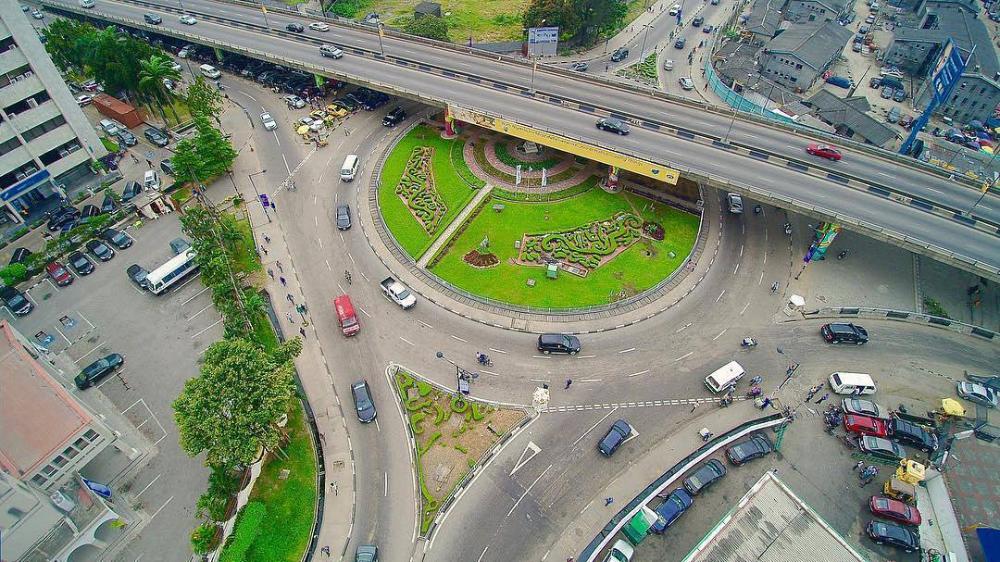
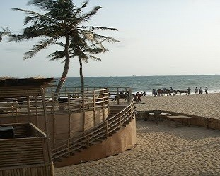
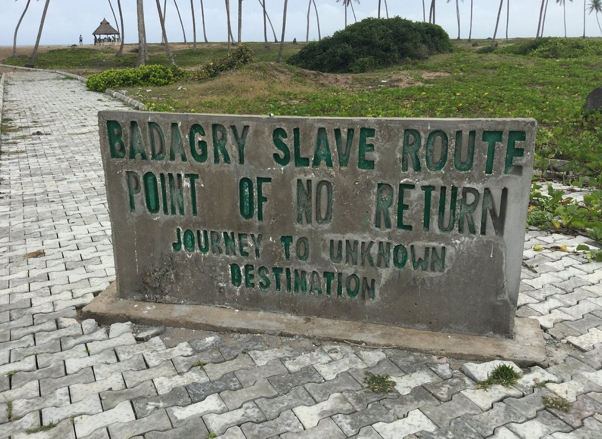
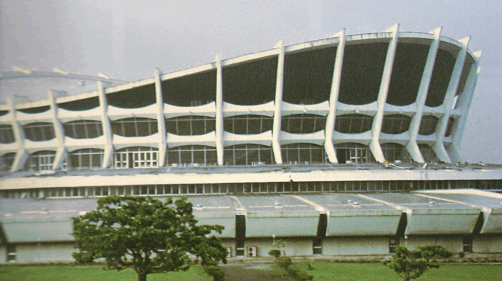
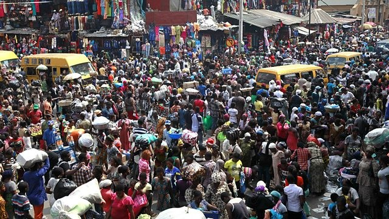

Did you know that Lagos is the home to the largest economy in Africa?
Lagos, the burstling megacity of Nigeria, is renowned for its vibrant culture,dynamic economy, and rich history. As the commercial capital of Africa's most populous nation, Lagos is a melting pot of diverse ethnicities and traditions, offering visitors a unique blend of modernity and heritage. From its picturesque beaches and lively markets to its thriving arts scene and electricfying nightlife, Lagos is a city that never sleeps. its not just a destination- it's an experience, where every street and neighbouhood tells a story of resilience, creativity, and innovation. Discover Lagos, the true heart of West Africa.

A megacity, that is on the top ten of the world's fastest-growing cities and urban areas.

The Elegushi Beach, a private beach known for its golden sands, gentle waves, and a variety of activities

The Badagry Slave Route, a historic site that includes several locations that were part of the transatlantic slave trade

The National Arts Theatre, a cultural landmark and architectural masterpiece servesing as the country's premier performing arts center

Balogun Market, the sprawling open-air mall that is one of the largest markets in West Africa
Top Attractions & Experinces to Visit in Lagos
- Beaches
- Historical Sites
- Cultural Spots
- Local Markets
© 2024 Basheerah Bello. All rights reserved